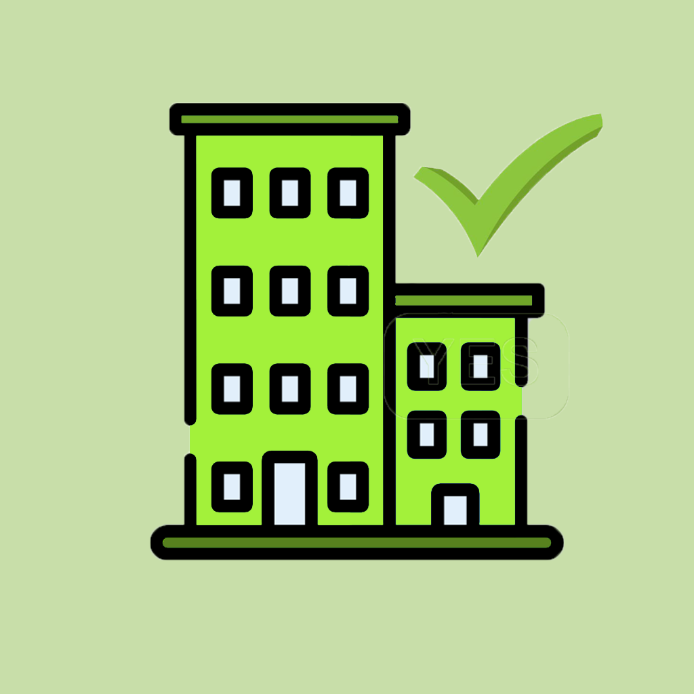
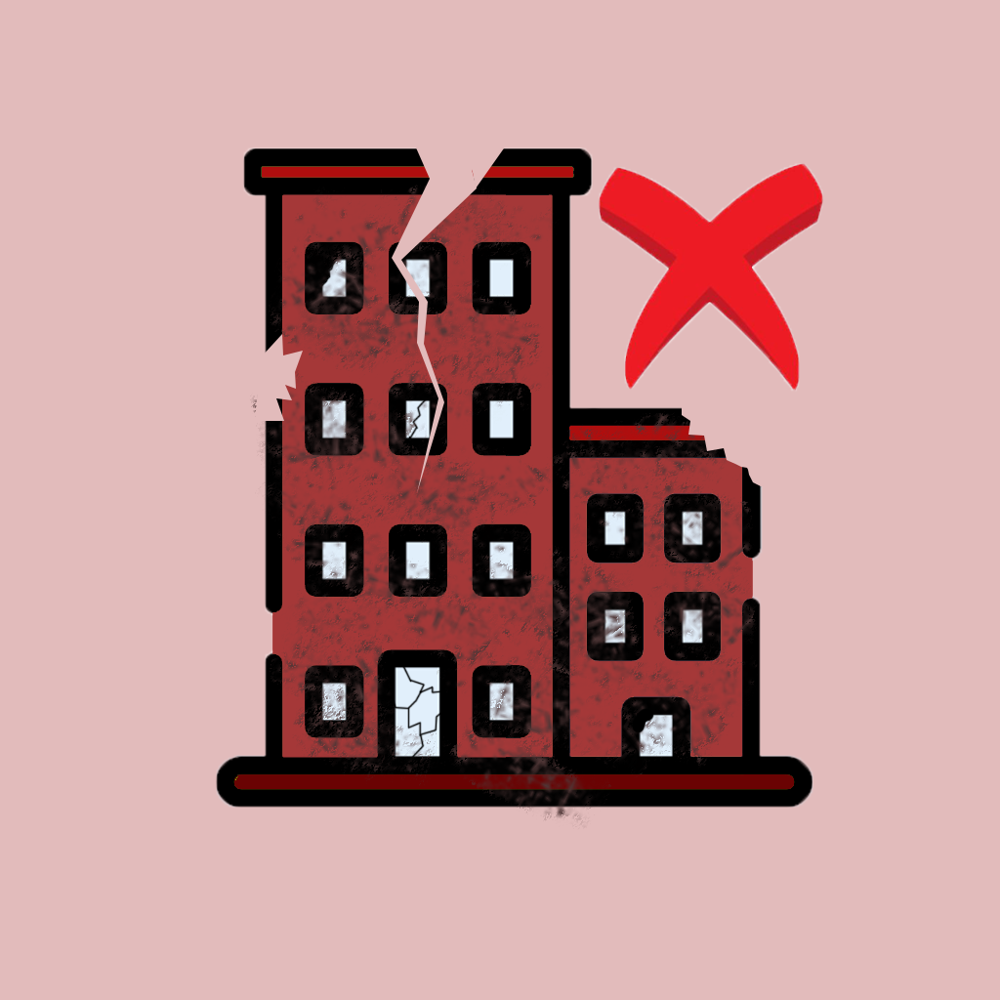

<ion-header [translucent]="true" class="header">
  <ion-toolbar color='medium'>
      <ion-buttons slot="secondary">
          <ion-button>
              <ion-icon slot="icon-only" name="person-circle"></ion-icon>
          </ion-button>
      </ion-buttons>
          <ion-buttons slot="start">
              <ion-menu-button menu="first"></ion-menu-button>
          </ion-buttons>
      <ion-title>Relevamiento Visual</ion-title>
  </ion-toolbar>
</ion-header>


<ion-content [fullscreen]="true">

  <div class="paginaCompleta">

  

  

</div>


</ion-content> 
